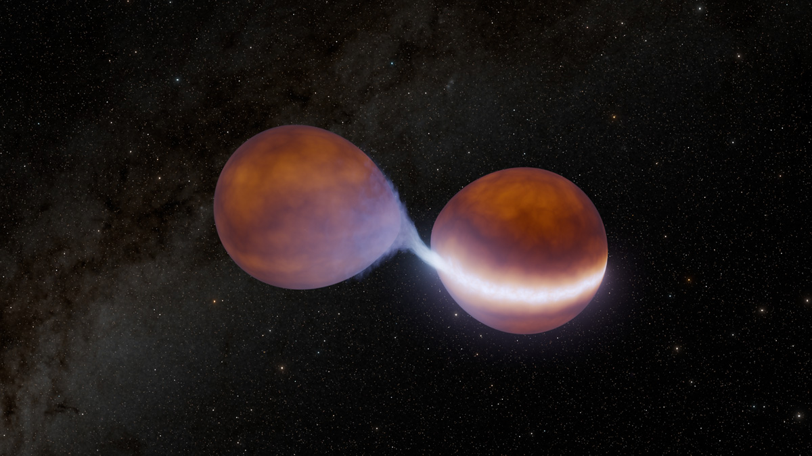
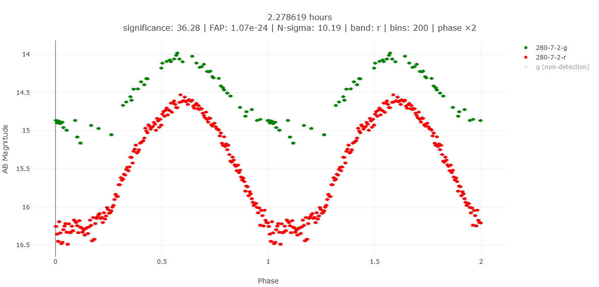
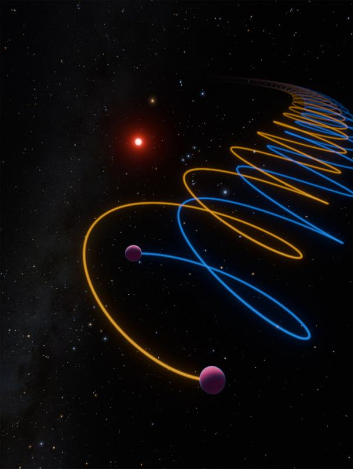

About
I am a graduate student in physics focusing on data analysis tools for searching astronomy surveys, particularly the Zwicky Transient Facility. My scientific interests involve the interactions between extremely low mass stars and planets. Currently I am interested in the effects of mass transfer between low mass objects.
I received my Bachelors degree in physics from the University of California, Santa Barbara with a minor in astronomy. Outside of school I am a general aviation pilot and hobby metalworker.
Research
-

Discovery of Substellar Mass Transfer
I led the discovery of ZTF J1239+8347, a record-breaking brown dwarf binary orbiting every 57 minutes and the first confirmed system undergoing stable mass transfer between two substellar objects. These systems, which I have dubbed "Hourglass Binaries" for their shape and approximately hour length orbital periods, challenge our assumptions about the formation and migration of planetary mass objects. In addition to the discovery of ZTF J1239+8347 I also published a paper on the theoretical evolution of these exotic systems.
-

ZTF Variability Project (ZVAR)
I programmed the GPU-accelerated periodicity analysis of the ZVAR project, which searches for periodic signals in over 3 billion optical light curves. The ZVAR project utilizes the Fast Periodic Weighting (FPW) algorithm, which I co-developed with Prof. Douglas Finkbeiner and Prof. Thomas Prince to find periodic variable stars of any type.
-

Binary Brown Dwarfs
I independently discovered the binarity of the first T dwarf, Gliese 229B using radial velocity measurements from Keck/NIRSPEC. This discovery resolved a crucial tension with the computed dynamical mass of the system and is one of the first brown dwarf binaries found to be orbiting a main sequence host. Recently I have been searching for more brown dwarf binaries, particularly around main sequence hosts as these systems are valuable tests of planet formation.
Selected publications
- 2026
- 2026
- 2025
- 2024
Presentations
-
Apr 2026
The Discovery of Stable Substellar Mass Transfer and ZTF J1239+8347 Department of Astronomy and Astrophysics, University of California, Berkeley
-
Jul 2023
Strange Giants: High Mass Brown Dwarfs and Gliese 229B Astronomy on Tap, Las Cumbres Observatory, Santa Barbara